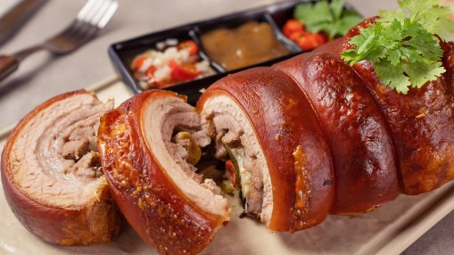

Lechon
Lechon adalah babi panggang utuh yang terkenal dengan kulitnya yang renyah dan daging yang lembut. Biasanya disajikan dalam acara besar dan perayaan di Filipina sebagai hidangan istimewa.
- Biasanya disiapkan secara utuh dan dipanggang perlahan
- Kulit renyah menjadi daya tarik utama
- Hidangan tradisional untuk pesta dan festival
- Disajikan dengan saus liver khas